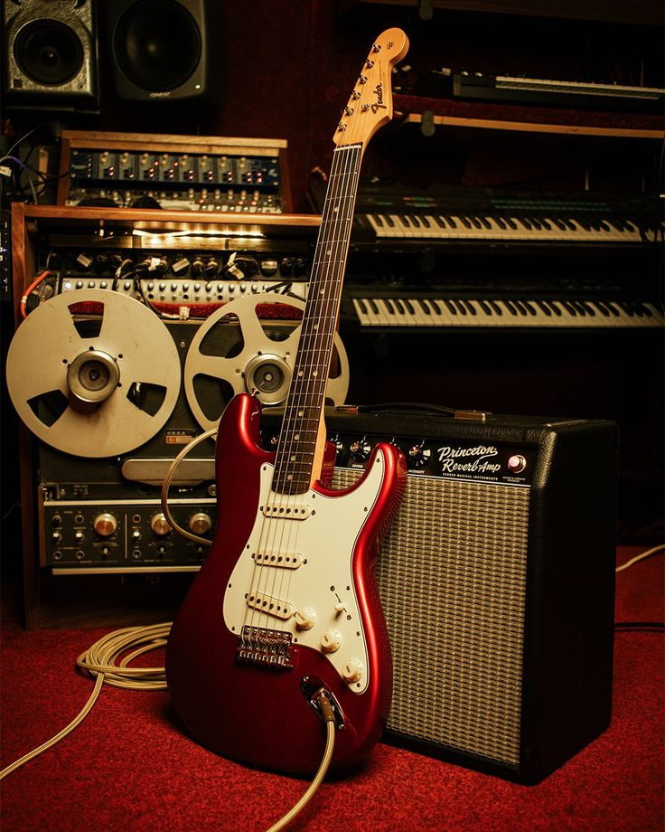
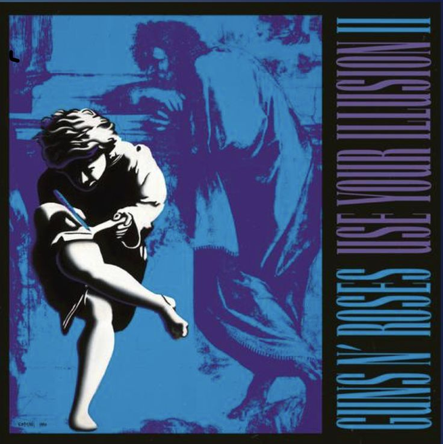
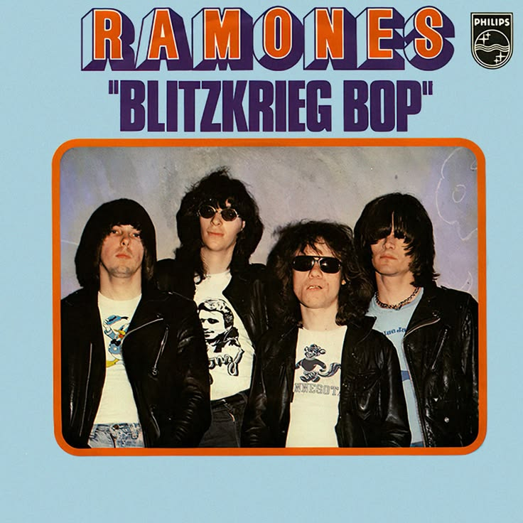
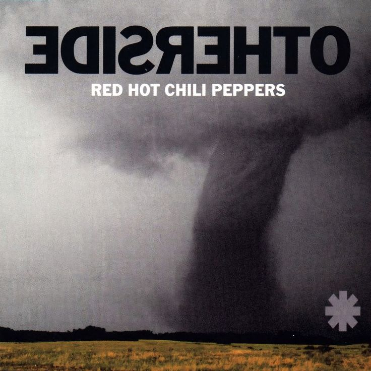

Come As You Are
Nirvana

Tudo começou na década de 1930 com uma necessidade simples: fazer o som do violão ser ouvido no meio das grandes orquestras de jazz e blues. Inventores visionários usaram ímãs e eletricidade para captar a vibração das cordas de aço, dando origem a um instrumento totalmente novo. Pouco tempo depois, nos anos 1950, o surgimento das guitarras de corpo sólido revolucionou a música ao permitir volumes mais altos, timbres limpos e o nascimento do Rock 'n' Roll. O instrumento deixou de apenas acompanhar para se tornar a voz principal dos palcos.
Com o passar das décadas, pedais, distorções e a criatividade de grandes lendas transformaram a guitarra em um símbolo universal de liberdade e atitude. Ela aprendeu a chorar no blues, explodir no rock, balançar no funk e emocionar em qualquer estilo musical.
"Hoje, muito além de madeira, aço e circuitos, a guitarra é uma extensão da alma de quem toca. Segurar uma é conectar-se com décadas de história e transformar sentimentos em som, seja no conforto do seu quarto ou diante de uma multidão."
Captação elétrica no Jazz e Blues
Corpo sólido e o nascimento do Rock
Pedais, distorções e identidade própria
Riffs e músicas simples e marcantes para começar a tocar guitarra.
Nirvana

Bob Dylan
Skank

Ramones

Red Hot Chili Peppers

Deep Purple